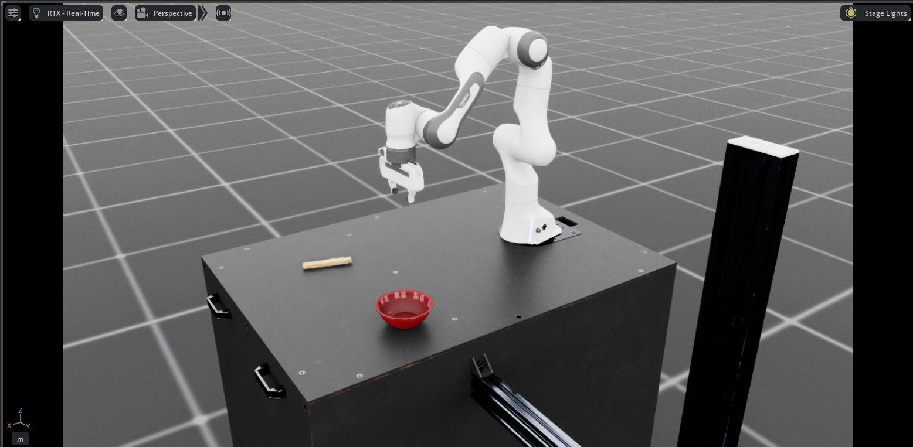
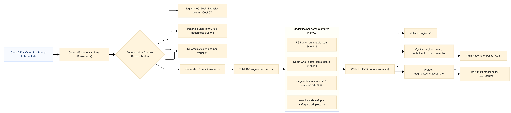

Robot Simulations(work in progress)

Advanced robotic simulations demonstrating cutting-edge teleoperation and control techniques. Features Franka Emika robot arm performing complex manipulation tasks with .
Project Overview
This project showcases advanced simulation environments for robotic manipulation and teleoperation. Using state-of-the-art tools and frameworks such aas IsaacLab. It demonstrate real-time task execution of trainied models on unique tasks.
Key Features:
- Franka Emika robot arm teleoperation
- Apple Vision Pro integration for data collection
- Data augmentation using various tools
Technology Stack
The simulation platform leverages industry-standard robotics frameworks and cutting-edge spatial computing technology:
Robot Platform
Franka Emika Panda robot arm
Teleoperation Interface
Apple Vision Pro for spatial computing
Simulation Environment
Isaac Sim 5.0
Control Framework
Isaac Lab for task definition and data collection
Cosmos Transfer1
Physical world foundation model for sim-to-real transfer
Domain Randomization Pipeline
This pipeline demonstrates an advanced data augmentation strategy using domain randomization to scale a limited set of demonstrations into a robust training dataset.

Complete domain randomization pipeline from teleoperation to augmented dataset
Pipeline Overview:
1. Collection (48 demos)
Teleoperation was performed with the Franka arm in Isaac Lab using CloudXR with Vision Pro, recording synchronized observations across multiple modalities.
2. Domain Randomization (Augmentation)
For each original demonstration, 10 deterministic variations are created by randomizing:
- Lighting: Intensity and color temperature variations
- Materials: Metallic and roughness properties
This scales the dataset from 48 to 480 demonstrations (10x augmentation factor).
3. Modalities
Each demonstration stores time-aligned data including:
- RGB Images: Wrist and table cameras (84×84 resolution)
- Depth Images: Wrist and table cameras (84×84 resolution)
- Segmentation: Semantic and instance segmentation masks
- Low-Dimensional State: End-effector position, quaternion orientation, and gripper state
4. Storage Format
All outputs are written in a robomimic-style HDF5 format:
- Data organized in
data/demo_*groups - Observations stored in
obs/subdirectories - Attributes noting the original demo ID and variation index
5. Training Paths
The resulting augmented_dataset.hdf5 can feed multiple training approaches:
- RGB Visuomotor Pipeline: Standard vision-based control policies
- Multi-Modal RGB+Depth: Policies leveraging both color and depth information
- Segmentation-Augmented: Using segmentation for auxiliary losses or teacher signals